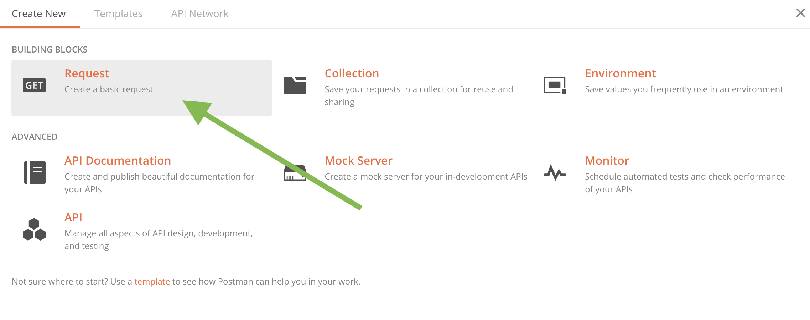
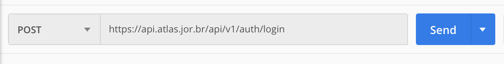
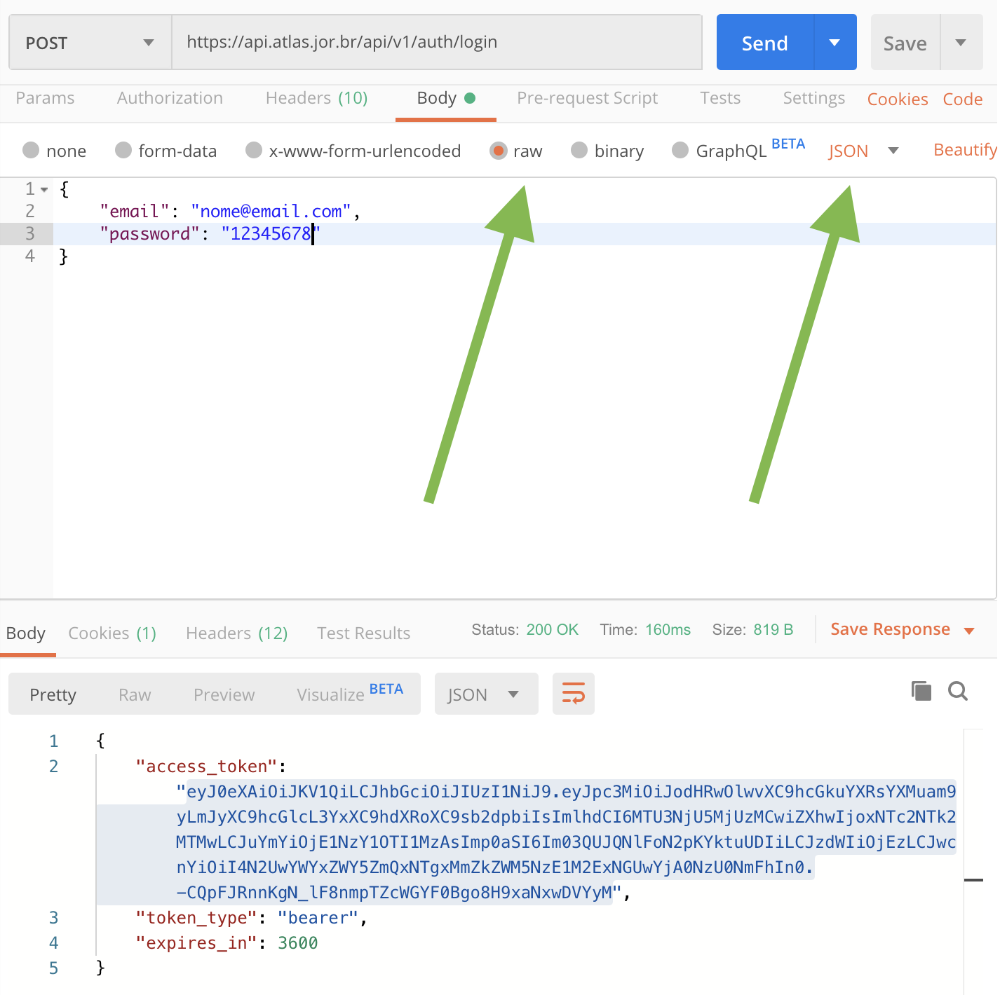
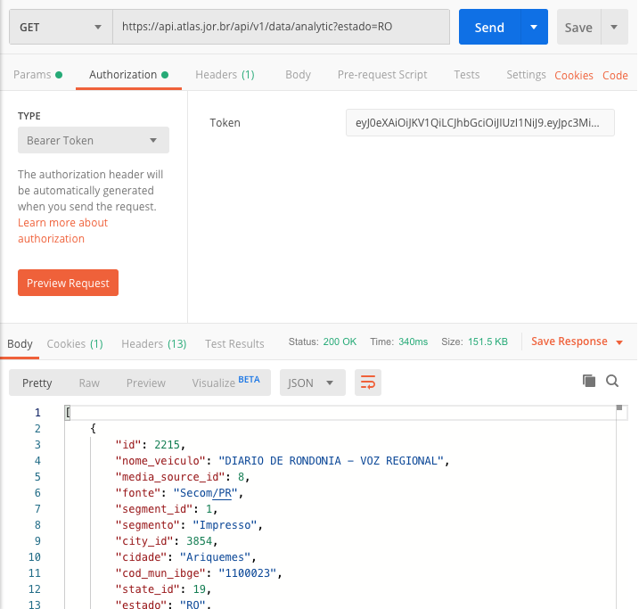

Bem vindo à API do Atlas da Notícia
Estamos trabalhando para melhorar sua experiência com esta API, desenvolvendo novos recursos, tutoriais, documentações e interfaces.
A API tem a função de ser um recurso útil para construção de aplicações, automação de análises e rotinas e acesso rápido a partir de sua ferramenta ou linguagem de progamação favorita.
Para ter um acesso direto mais fácil aos dados, você também pode fazer consultas diretamente no banco de dados através de nossa interface de consulta.
Primeiro passo: cadastro
O primeiro passo para acessar a API do Atlas da Notícia é fazendo um cadastro, criando seu próprio login e senha, que serão utilizados como credenciais de uso do nosso banco de dados.
Segundo passo: recuperação de senha
Não perca seu login e senha: esse registro fará com que você tenha acesso a todos os dados da API, mas, como ainda não temos um sistema público (um backend) que possa ser utilizado abertamente, não é possível o próprio usuário alterar suas credenciais.
Caso tenha alguma dúvida e precise de uma nova senha, por favor entre mande um email para contato@atlas.jor.br, e nossa equipe emitirá uma senha nova para você.
Terceiro passo: métodos de acesso
Por enquanto, ao fazer o registro, você possui acesso apenas ao retorno de dados da API. Para saber mais como utilizar esse recurso, vá para a página de documentação completa ou veja nosso breve tutorial abaixo.
A API funciona com geração de tokens, e para isso você vai precisar utilizar o usuário e senha que criou pelo portal do Atlas da Notícia.
Há várias ferramentas e métodos de acesso aos dados. Abaixo, listamos alguns métodos eficientes utilizando um client de acesso a APIs e mediante uso de programação.
Acesso via Postman
Postman é um aplicativo que, entre outras coisas, facilita o acesso aos dados de uma API. Você pode fazer o download do aplicativo neste link.
Abra o Postman e clique em New >> Get Request.

Na barra de naveração é necessário selecionar a opção POST e colocar a seguinte URL: https://api.atlas.jor.br/api/v1/auth/login. Essa URL vai fazer com que sua requisição de login seja feita ao servidor do Atlas da Notícia.

Agora é necessário colocar as credenciais necessárias para que o login seja feito. Utilize seu login e senha escolhidos no momento do registro da API.
Para isso, clique na aba Body e coloque copie e cole o seguinte código substituindo os valores abaixo por sua própria credencial:
{
"email": "nome@email.com",
"password": "12345678"
}
Isso vai gerar um access_token, com o qual você vai poder retornar dados do nosso banco de dados. Esse recurso é utilizado para dar mais segurança às informações e evitar abusos a nossos servidores gratuitos.
Certifique-se de que o formato escolhido esteja com a caixa selecionada RAW e que o retorno seja em JSON, conforme as flechas indicam na figura abaixo.

Clique no botão azul SEND, o que retornará seu token mais abaixo na tela.
O próximo passo é criar uma aba nova no Postman e utilizar a função GET. Isso que vai retornar os dados para dentro de seu aplitivo.
Mas antes, é necessário informar à sua aplicação o token que você vai utilizar, caso contrário o servidor não vai reconhecer seu login. Clique em Authorization e escolha o tipo de autorização como Type = Bearer. Na caixa do lado
é possível colar o token que você acabou de gerar na outra aba. Lembrando que esse token se renova a cada uma hora.
Um exemplo de API que você pode testar para ver se seu retorno está funcionando é https://api.atlas.jor.br/api/v1/data/analytic?estado=RO, a qual retorna todos os veículos do Estado de Rondônia.
Para saber as URLs válidas, que retornam dados, é preciso ler a documentação da API e entender as combinações possíveis. Por exemplo a URL https://api.atlas.jor.br/api/v1/data/analytic?segmento=Online&estado=SP retorna todos os veículos online do Estado de São Paulo.
Basta clicar em SEND e ver abaixo na tela o resultado.

Acesso via R ou Python
O acesso utilizando a linguagem de programação R ou Python é fácil e direto. Este é o link para o gist que contém os códigos